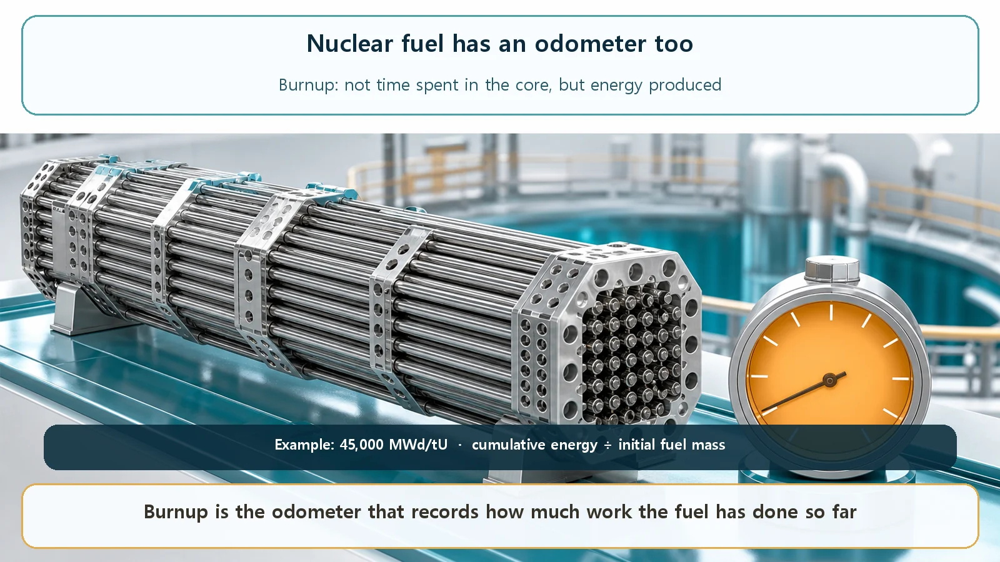
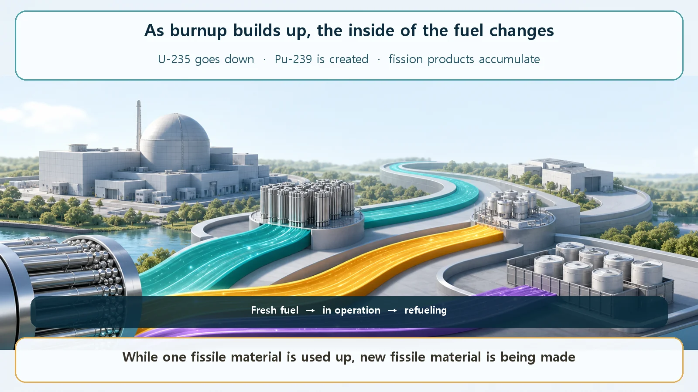

Long-Term Core Behavior & Fuel Cycle · 151
Not How Long, but How Far — Burnup, the Odometer of Nuclear Fuel
Burnup records how much energy a fuel has produced per unit of its mass, which is why it, not the calendar, tells you how used the fuel is.
Burnup is the total energy a nuclear fuel has produced so far, divided by its initial mass: an odometer for fuel. It measures how much the fuel has been used, not how many days it has spent in the reactor, and it is usually given in MWd/tU (megawatt-days per tonne of uranium).
So far we have followed the heat inside a reactor: where it is born, how it moves, and how it gets out. But what about the thing that makes all that heat, the nuclear fuel itself? Does it just sit there unchanged? Not at all. Over the months and years it spends in a reactor, the inside of the fuel changes slowly but steadily. The first key to following that long journey is a quantity called burnup.
The first number you check on a used car
Shopping for a used car, the first number you look at is probably the odometer: how many miles the car has covered in total. "How much has it been driven?" tells you far more honestly about its condition than "how many years has it been owned?" A ten-year-old car with 12,000 miles and a three-year-old car with 120,000 miles: it's obvious which one has more wear.
Nuclear fuel has a number that plays exactly that role. Burnup is the total energy a nuclear fuel has produced in the reactor so far, divided by the fuel's initial mass. It doesn't ask "how many days has this fuel been in the reactor?" It asks "how much energy has this fuel produced, and so how much has it been used?" Think of it as an odometer fitted to the fuel.

Why "how much," not "how many days"?
Why measure burnup in energy rather than time? Because days in the reactor tell you nothing about how much fuel was actually consumed. On the same day, a reactor running at high power uses its fuel heavily; at low power, lightly. Picture two cars on the same day: one runs nonstop on the highway, the other stays in a parking lot. Same time, very different distance.
So burnup is based on the energy produced. Without the heavy math, the relationship is simply:
Burnup = cumulative energy produced by the fuel ÷ initial mass of the fuel
The usual unit is MWd/tU (megawatt-days per tonne of uranium). One MWd is the energy produced by running at 1 megawatt for one day, and tU means one tonne of uranium. So burnup answers: "How many megawatt-days of energy has one tonne of uranium produced so far?" The unit itself shows that what matters is power (how hard) multiplied by time (how long).
For reference, fuel discharged from today's commercial reactors commonly has a burnup of roughly 40 to 50 GWd/tU (gigawatt-days per tonne). The exact value depends on the reactor type, the fuel design and the regulatory limits.
What is actually happening inside the fuel
A high-mileage car has worn parts. What happens inside nuclear fuel as burnup builds up? From the outside it looks like an unchanged metal rod, but inside, some dramatic changes are quietly underway.
First, uranium-235, the star of fission, steadily decreases. It releases energy by splitting, so the more the fuel is used, the more that stock is drawn down, like gasoline in a tank.
But there is a twist. Uranium-238, which makes up most of the fuel, doesn't just watch. When it swallows a neutron, it goes through a few steps and turns into plutonium-239, a new fissile material, which also splits and releases energy. In other words, the fuel makes some new fuel inside itself while it is being used, and toward the later part of operation plutonium's share of the total energy becomes quite substantial. Car parts only wear out; nuclear fuel grows new parts on one side while the other wears down. This is where the odometer analogy runs out.
Second, every fission leaves fragments behind, and these fission products pile up inside the fuel. Many of them are good at grabbing neutrons, so they quietly get in the way of the chain reaction.
Add these changes together and the fuel's capacity to sustain the chain reaction, its reactivity, gradually declines. When the reactor can no longer be run efficiently, that fuel is taken out and replaced with new fuel: refueling. It's the same logic as finally trading in a high-mileage car.

Easy-to-confuse ideas
Burnup is not enrichment. Enrichment is an initial specification set before the fuel goes in: what percentage of the uranium is the readily fissile uranium-235 (light-water reactor fuel is typically about 3 to 5%). Burnup is the running record of how much the fuel has been used since. They differ as much as a new car's engine size and the mileage it has racked up.
Burnup is not days of operation. Over the same period, higher power means higher burnup. It's an odometer, not a calendar.
High burnup doesn't mean the fuel has burned to ash. "Burn" here isn't combustion with oxygen; it's a figurative way of saying the fuel releases energy through fission. The rods don't char. And spent nuclear fuel still contains fissile material and a substantial amount of energy in the form of decay heat and radioactivity. Fuel is replaced not because its energy hits zero, but on a judgment that weighs reactivity, economics and fuel integrity together.
So why does it matter?
Burnup is a very practical number. Operators use it to plan when to replace fuel: reaching the target burnup signals that it's time to take the fuel out, which ties into the plant's whole operating cycle and maintenance schedule. It also guides how fuel is arranged in the core. Mixing fresh, partly used and long-used fuel well keeps power from piling up in one area and spreads it evenly, which helps secure safety margin.
A reactor's very first core is all fresh fuel, so it behaves somewhat specially. After that, replacing only part of the fuel each cycle, again and again, lets the whole core settle into a fairly regular rhythm. And how spent fuel must be cooled and stored also depends on how far its burnup went. One number connects refueling, core design, safety margin and spent fuel management.
Today's takeaways
- Burnup is the cumulative energy a fuel has produced divided by its initial mass: the fuel's "odometer."
- It is based on power × time, that is, energy, not days in the core (unit example: MWd/tU).
- As burnup builds, uranium-235 falls, uranium-238 is turned into new fuel (plutonium-239), and fission products accumulate, so reactivity gradually drops.
- It differs from enrichment and from days of operation, and high burnup doesn't mean the fuel is gone (spent fuel still holds energy).
- It decides refueling timing, core loading, safety margin and spent fuel management.
With the burnup odometer in hand, next we'll look at exactly how the fuel's composition shifts along this journey, and at the rhythm in which a reactor core settles down.